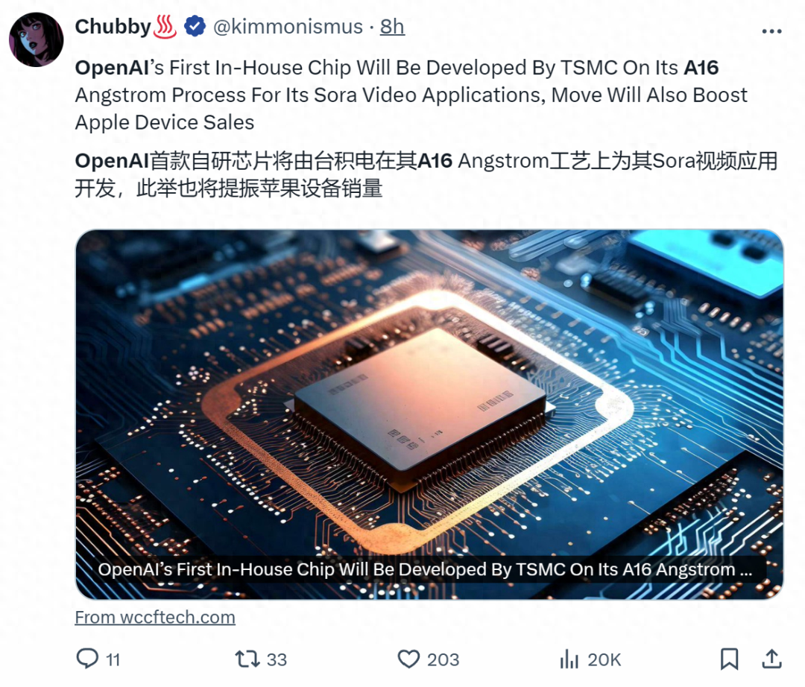
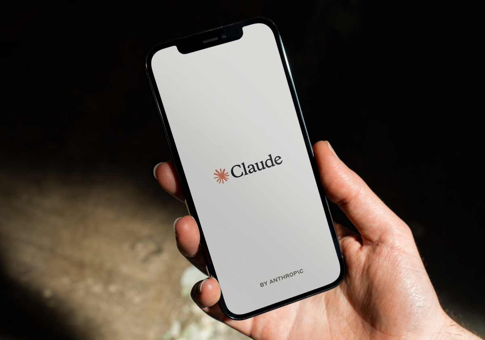
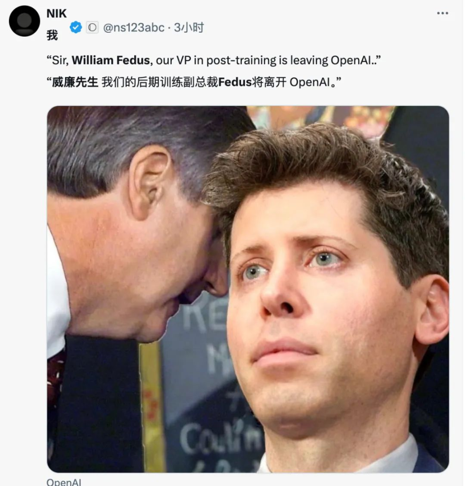
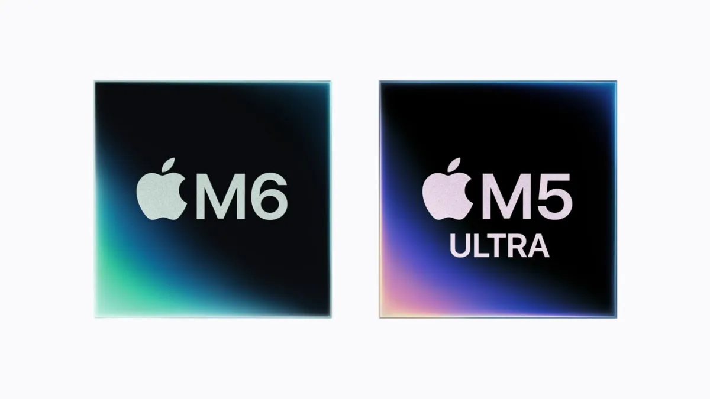
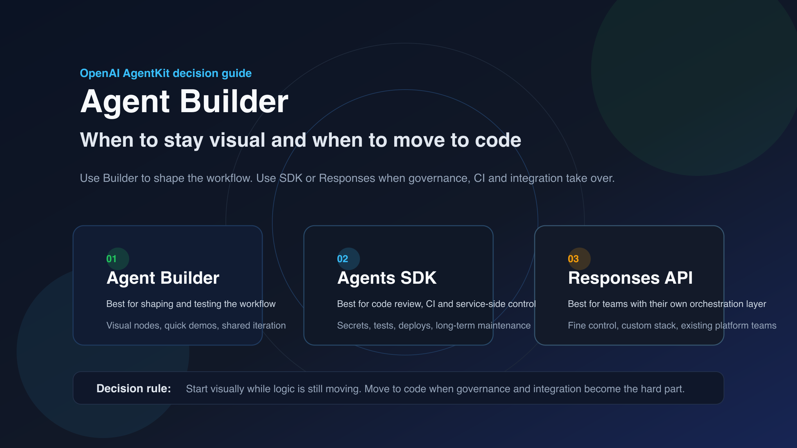
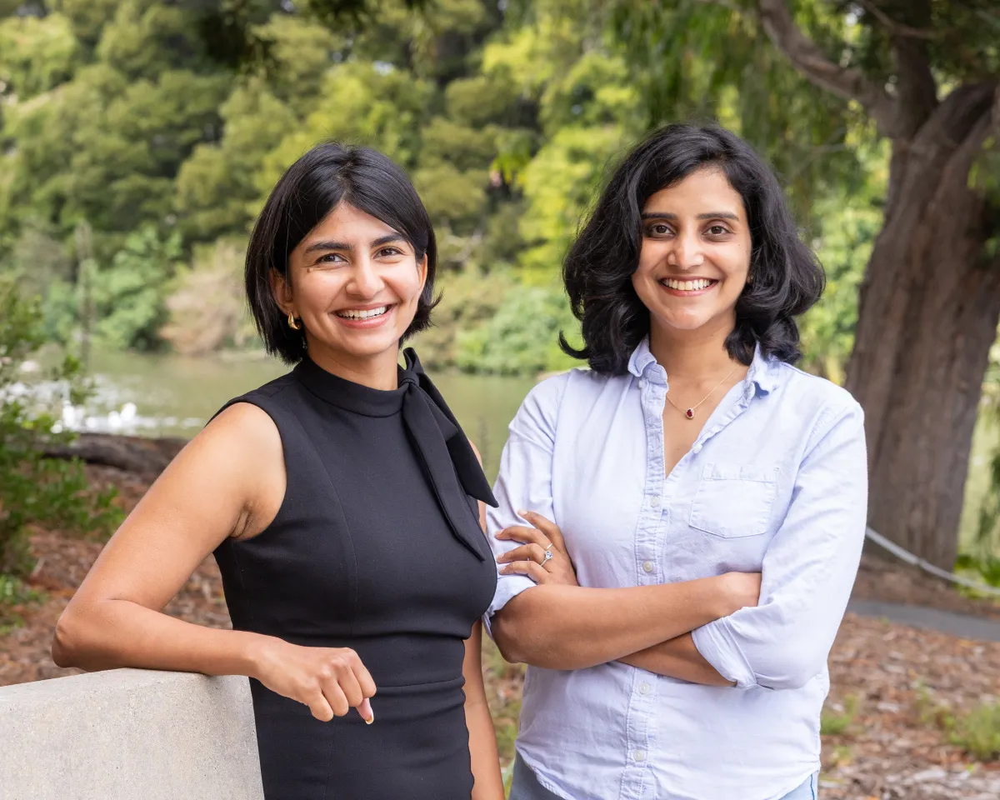
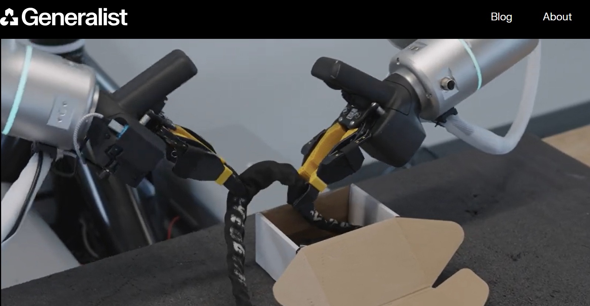

2026-08-26
VOL 330
读者，早。
第二张是权限账。Claude 把 chat 和 Cowork 的记忆合并，OpenAI 推 Admin plugin 管 workspace，Google 把 Gemini Enterprise 塞进法律行业，Instagram 把剪辑第一稿放进 Reels。AI 正在离开单点工具，变成入口、记忆和管理层。体验会顺，代价也更隐蔽：谁能看见它记了什么，谁能撤权，谁对误操作负责。

OpenAI 8 月 25 日公布 Jalapeño 首批实测结果，称这颗自研 inference chip 在 InferenceX 上针对 GPT-OSS 120B、DeepSeek R1 和 Kimi K2.5 1T 的测试中，实现 1.5 到 1.9 倍更高的每瓦 AI work，以及 1.7 到 3.6 倍更低端到端延迟。OpenAI 还说 Jalapeño 会在年底前开始部署到自家 compute infrastructure，并继续使用 NVIDIA 等伙伴的训练和推理加速器。

TechCrunch 8 月 25 日报道，Anthropic 正把 Claude chat 和 Claude Cowork 的记忆系统合并，让用户在聊天里形成的项目背景、偏好和资料能被 Cowork 继续使用。报道称，Claude 会让用户查看、编辑或删除已保存的 topic；默认不保存健康、种族、宗教、政治、性别身份等敏感信息，用户也可以选择开启敏感 topic 记忆。

Business Insider 8 月 25 日报道，Google 推出 Gemini Enterprise for Legal，面向律所和法律团队提供可定制 Gemini agents，覆盖合同审查、监管跟踪、文档分析等任务。报道提到 Google 与 Cleary Gottlieb、Freshfields 等律所合作打磨产品，并接入 Everlaw、Relativity、iManage、NetDocuments、DocuSign 等生态伙伴，同时承诺客户数据不会用于训练模型。

WSJ 8 月 25 日报道，负责 OpenAI data center initiatives 的 Chris Malone 已离职。报道称，Malone 2025 年 3 月加入，曾参与 Stargate 相关扩容工作；在项目遇到困难后，OpenAI 转向租用整座设施，并由 Sachin Katti、Adrian Caulfield、Uday Ruddarraju 等人重组基础设施领导线。WSJ 还称 OpenAI 到 2030 年的 compute capacity 投资预期已升至 7500 亿美元。
The Guardian 8 月 25 日报道，Meta 正在 Oakland 面对 California 和另外 28 个美国州提起的诉讼，原告指控 Facebook、Instagram 产品设计让儿童上瘾，并隐瞒潜在伤害。Meta 否认指控。报道同时提到，科技行业对数据中心扩张和 AI 基建的公共反弹也在升温，法院正在成为美国科技治理的重要战场。

OpenAI COO Sarah Friar 8 月 25 日发文称，OpenAI 的 compute strategy 是一个从 data centers、chips、frontier models、developer platform、consumer and enterprise products 到 AI-native devices 的 integrated system。文章同时提到，GPT-5.6 Sol 在 Artificial Analysis Coding Agent Index 上用 max reasoning 取得新高，并比另一 leading model 少用 54% output tokens。
Anthropic 8 月 25 日宣布推出 500 万美元 grant program，资助独立研究 AI 如何影响用户 wellbeing。项目将给 grantees 提供资金、模型访问和技术支持，要求产出 open-source evaluations，帮助行业衡量模型对用户的影响。Anthropic 称研究者独立工作，并公开发布项目。
NVIDIA 在 Hot Chips 2026 页面披露，8 月 25 日议程包括 BlueField-4 Processor Powers the AI Factory Operating System、Spectrum-X Multiplane Network Architecture 和 LPU Accelerator for Heterogeneous Compute。页面还介绍 Vera CPU、Rubin GPU、NVLink Switch、Spectrum-X Ethernet 与 BlueField-4 DPU 的组合，用于应对现代 AI factories。

TechCrunch 8 月 25 日报道，Apple 发布 M5 Ultra 和 M6。M5 Ultra 由两个 dual-die M5 Max 融合成 Apple 首个 quad-die chip，最高 36-core CPU、80-core GPU、1.2 TB/s unified memory bandwidth；M6 使用 2 nm process、12-core CPU complex、Dual 16-core Neural Engine。Apple 称新框架和芯片可让开发者在 Mac 本地运行和 fine-tune large AI models。

OpenAI 8 月 25 日发布 Admin plugin for ChatGPT Work and Codex，定位是让管理员在一个 conversation 里理解 workspace activity、管理 access and usage，并执行受支持的 admin actions。OpenAI 称，管理员可以提问、查看细节、做授权变更并确认结果，不必在 analytics、settings 和 reports 之间来回切换。

TechCrunch 8 月 25 日独家报道，AI presentation startup Gamma 收购 Accel 支持的 design startup Lica，后者创始人将领导 Gamma 的 design research lab。Lica 起初可把 screenshots 和 recordings 转成 presentations 和 videos，2024 年融资 400 万美元，后续聚焦电商营销视频。Gamma 称未来会探索更多 visual communication formats。
TechCrunch 8 月 25 日报道，WhatsApp 推出账号安全更新，包括更强 two-step verification、允许为账号添加多个 passkeys，以及 Android 用户接听陌生号码时看到更多上下文。WhatsApp 过去的两步验证依赖 6 位 PIN，现在用户可选择更长的 alphanumeric password；多 passkey 对同时使用 iOS 和 Android 的用户更方便。
TechCrunch 8 月 25 日报道，Instagram 推出 Reels 的 First Draft 功能，可自动修剪用户选择的视频片段、移除停顿，并在 10 秒内生成 initial cut。该功能先在 iPhone 上推出，可从 Instagram camera 或 Reels gallery 使用。报道指出，类似自动剪辑工具已存在于 Adobe Firefly Quick Cuts、CapCut Auto Cut 等产品中，但 Instagram 把它直接嵌入创作入口。
TechCrunch 8 月 25 日报道，Stable Diffusion 背后的 Stability AI 完成 7600 万美元 Series B，总融资达到 2.32 亿美元。新资金来自 Universal Music Group、Sony Music Group、Warner Music Group、EA，以及 AMD Ventures、Pacific Alliance Ventures。公司表示将继续建设 creative production 产品套件，并扩展 professional services。

Axios 8 月 24 日报道，AI robotics startup Generalist 获得 2 亿美元新融资，距此前 4 亿美元融资仅约两个月。新一轮由 8VC 领投，并有多位既有投资人参与。Generalist 由 Google DeepMind、Boston Dynamics 等机构校友创办，重点不是制造机器人硬件，而是开发 robot brains。
Axios Pro Rata 8 月 25 日提到，智能戒指公司 Oura 正考虑 IPO，目标募资约 30 亿美元，估值可能超过 160 亿美元。Oura 属于 wearable health tech，若上市窗口打开，将测试公开市场是否愿意继续给可穿戴设备的健康数据、订阅服务和 AI 分析能力高估值。

Instagram 8 月 25 日推出 Reels 的 First Draft，用户选择多个视频片段后，系统会自动剪掉停顿、挑出片段并生成初剪版本，官方口径是 first pass 可在 10 秒内完成。它先在 iPhone 上推出，入口在 Instagram camera 和 Reels gallery。